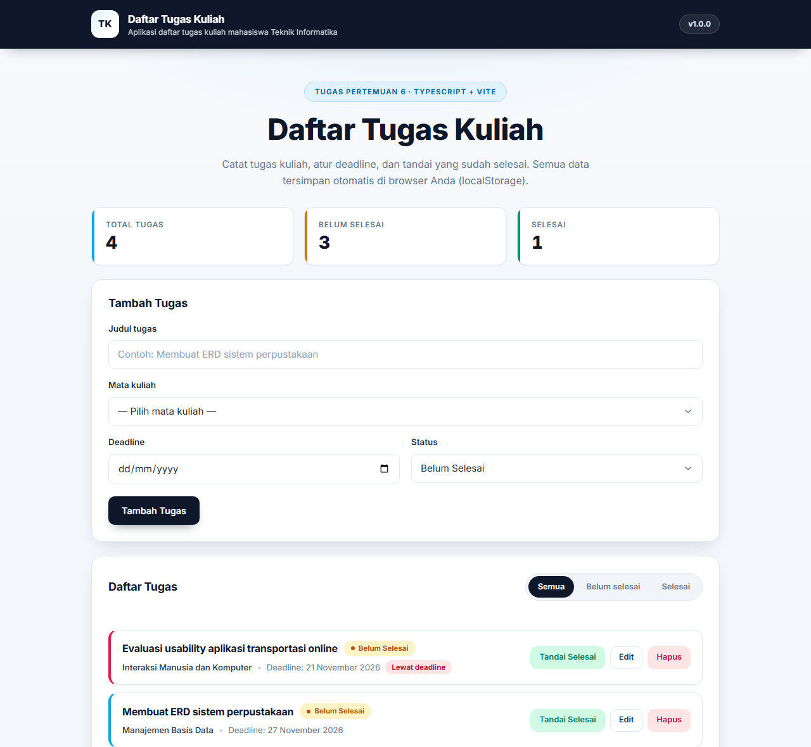

Gilang Rizky Ramadhan
Informatics Engineering Student | Aspiring Data Analyst & Scientist | AI Enthusiast
Halo! Saya adalah mahasiswa program studi Teknik Informatika di UIN Sunan Gunung Djati Bandung. Saya memiliki ketertarikan mendalam pada eksplorasi data, Data Analytics, dan kecerdasan buatan (AI). Berdedikasi untuk terus memecahkan masalah kompleks melalui pendekatan berbasis data dan siap mengaplikasikan pengetahuan akademis ke dalam solusi industri yang nyata.
Proyek & Sertifikasi
Kumpulan pengembangan proyek teknologi informasi dan sertifikasi profesional yang memvalidasi kompetensi teknis saya.
Proyek Unggulan
Aplikasi Pengenalan Pelat Nomor Kendaraan
Mengembangkan sistem deteksi dan pengenalan karakter pelat nomor otomatis menggunakan arsitektur YOLOv8 untuk lokalisasi objek dan EasyOCR untuk ekstraksi teks (Optical Character Recognition).
Proyek Sosial Digitalisasi UMKM
Membantu digitalisasi pada sektor UMKM lokal melalui penyusunan dokumenter informatif terkait pengelolaan informasi digital dan implementasi sistem pembayaran digital (QRIS), guna meningkatkan jangkauan pasar dan efisiensi transaksi.
Sertifikasi & Badge Resmi Google Cloud Skills
Enterprise Agents and Use Cases
Validasi keahlian dalam arsitektur AI agent level enterprise, orkestrasi workflow, dan integrasi use cases agen cerdas berbasis Google Cloud.
Agent Fundamentals
Pemahaman konsep dasar agen otonom, prompting orchestration, kerangka penalaran (reasoning), dan implementasi tool integration.
Create Your First Gemini Enterprise Application
Membangun dan mendeploy aplikasi enterprise pertama menggunakan ekosistem model multimodal Gemini dan Google Cloud.
Akademis & Mata Kuliah
Jadwal dan rincian mata kuliah yang sedang saya tempuh pada Semester 5 di program studi Teknik Informatika, UIN Sunan Gunung Djati Bandung.
| Mata Kuliah | SKS | Hari | Waktu | Ruang | Dosen Pengampu |
|---|---|---|---|---|---|
| Manajemen Basis Data | 3 | Senin | 07:00 s/d 09:30 | R.4.09 | Wildan Budiawan Zulfikar S.T., M.Kom. |
| Manajemen Proyek Perangkat Lunak | 3 | Senin | 09:30 s/d 12:00 | R.4.01 | Agung Wahana S.E., M.T. |
| Intelegensia Buatan | 3 | Selasa | 12:40 s/d 15:10 | R.4.10 | Jumadi ST., M.Cs. |
| Interaksi Manusia dan Komputer | 3 | Rabu | 09:30 s/d 12:00 | R.4.01 | Dr. Cepy Slamet S.T., M.Kom. |
| Jaringan Komputer | 3 | Kamis | 07:00 s/d 09:30 | R.4.10 | Cecep Nurul Alam M.T. |
| Pengembangan Aplikasi Mobile | 3 | Kamis | 12:40 s/d 15:10 | R.4.12 | H. Aldy Rialdy Atmadja M.T |
| Pengembangan Aplikasi Web | 3 | Jumat | 09:30 s/d 12:00 | Gedung R.3.9 | Muhammad Deden Firdaus ST, M.Kom |
Daftar Tugas Kuliah
Aplikasi CRUD untuk mencatat tugas kuliah — tambah, edit, hapus, dan ubah status — dengan penyimpanan localStorage sehingga data tetap ada setelah halaman dimuat ulang.
- Teknologi
- TypeScript · Vite · CSS
- Deploy
- Vercel — Production
- Branch kerja
- feature/crud-tugas
feature/ui-responsive - Repositori
- portofolio-gilang/
daftar-tugas-kuliah
Data tugas disimpan di browser Anda sendiri — tidak dikirim ke server.

Penjelasan Teknis
Konsep di balik aplikasi ini — klik tiap topik untuk membuka.
01 Git & GitHub
Git adalah version control system yang berjalan di komputer. Setiap perubahan yang di-commit tersimpan sebagai riwayat, sehingga kode bisa dibandingkan, dikembalikan, atau digabungkan. GitHub menyimpan repositori Git secara online dan menambahkan kolaborasi lewat Pull Request.
Proyek ini memiliki delapan commit di luar merge commit dengan format
Conventional Commits: feat: untuk fitur,
style: untuk tampilan, docs: untuk dokumentasi, dan
merge: untuk penggabungan. Logika CRUD dikerjakan di branch
feature/crud-tugas, tampilan responsif di
feature/ui-responsive; keduanya masuk ke main lewat
Pull Request #1 dan #2.
Merge conflict dilatih dengan dua branch yang mengubah baris yang sama pada
satu file. Git menandai bagian yang bentrok dengan <<<<<<<,
=======, dan >>>>>>>; penyelesaiannya
dilakukan manual, lalu ditandai selesai dengan git add dan
git commit. File .gitignore menjaga
node_modules, dist, dan .env tidak ikut
ter-push.
Perintah yang paling sering dipakai: git status,
git add, git commit -m, git switch -c,
git merge, git push, dan git pull.
02 npm
npm adalah package manager untuk Node.js. Ia memasang library, menjalankan script proyek, dan mencatat versinya agar proyek bisa dipasang ulang di komputer lain dengan hasil yang sama.
package.json menyimpan nama proyek, script, dan daftar dependensi.
Proyek ini tidak memakai framework: hanya vite dan
typescript sebagai devDependencies.
npm install mengunduh paket ke node_modules dan
mengunci versi di package-lock.json. Folder
node_modules tidak di-commit karena ukurannya besar dan bisa
dibuat ulang kapan saja.
Tiga script utama: npm run dev menjalankan server pengembangan,
npm run build menjalankan tsc && vite build
(cek tipe lalu build produksi), dan npm run preview menjalankan
hasil build secara lokal.
03 TypeScript
TypeScript adalah JavaScript dengan sistem tipe statis. Tipe diperiksa saat
compile, sehingga kesalahan seperti salah nama properti atau mengirim
number ke parameter string ketahuan sebelum aplikasi
dibuka di browser.
Empat konsep yang dipakai nyata di aplikasi ini:
interface Task— mendefinisikan bentuk satu tugas: id, judul, mata kuliah, deadline, dan status.TaskStatus— type alias berisi union'Belum Selesai' | 'Selesai', membatasi status hanya pada dua nilai yang sah.Task[]— array yang hanya boleh berisi objek bertipeTask.loadData<T>dansaveData<T>— generic, agar satu fungsi penyimpanan bisa dipakai untuk tipe data apa pun tanpa kehilangan informasi tipe.
type TaskStatus = 'Belum Selesai' | 'Selesai'; interface Task { id: string; title: string; course: string; deadline: string; status: TaskStatus; } // T = tipe data yang disimpan; dipakai ulang untuk Task[] export function loadData<T>(key: string): T | null { const raw = localStorage.getItem(key); return raw ? (JSON.parse(raw) as T) : null; } // dipakai di main.ts let tasks: Task[] = loadData<Task[]>(STORAGE_KEY) ?? [];
Setelah tipe selesai diperiksa, TypeScript menghapus seluruh anotasi tipe. Yang dikirim ke browser tetap JavaScript biasa.
04 Vite
Vite adalah build tool yang berfungsi ganda: dev server saat pengembangan dan bundler saat produksi.
npm run dev menyajikan file lewat native ES module dan memakai
Hot Module Replacement — perubahan di src/main.ts atau
src/style.css langsung terlihat tanpa reload penuh.
index.html adalah entry point; Vite membaca
<script type="module" src="/src/main.ts"> lalu memproses
semua import di dalamnya.
npm run build menghasilkan folder dist berisi satu
HTML, satu CSS, dan satu JS dengan hash di nama file (misalnya
index-0H2oTFmd.js) agar browser tidak memakai cache lama. Yang
di-deploy ke Vercel adalah isi dist, bukan folder src.
05 Environment Variables
Environment variable menyimpan konfigurasi yang bisa berbeda antar lingkungan
(lokal, preview, produksi). Di Vite, hanya variabel berawalan
VITE_ yang diteruskan ke kode browser melalui
import.meta.env.
Aplikasi ini memakai tiga variabel: VITE_APP_NAME (judul
aplikasi), VITE_APP_VERSION (badge versi), dan
VITE_DESCRIPTION (deskripsi di header). Nilainya tampil di
halaman sebagai bukti konfigurasi terbaca.
File .env dipakai saat pengembangan lokal dan sudah masuk
.gitignore, sedangkan .env.example ikut di-commit
hanya berisi nama variabel tanpa nilai rahasia. Di Vercel, nilainya diisi lewat
Settings → Environment
Variables, bukan file di repo.
Penting: semua variabel VITE_ ikut ke browser
Nilainya dibundel ke JavaScript dan bisa dibaca siapa pun lewat DevTools. Jangan simpan API key, token, atau password di sana — data rahasia harus diproses di backend.
06 Compiler, Transpiler, Bundler
Tiga istilah ini sering tertukar, padahal perannya berbeda. Di proyek ini ketiganya bekerja berurutan.
- Compiler —
menerjemahkan kode dan memeriksa aturan bahasa.
tscmemeriksa tipe TypeScript; jika ada error,npm run buildberhenti sebelum bundling. - Transpiler — compiler ringan yang mengubah sintaks ke target tertentu tanpa analisis mendalam, misalnya membuang anotasi tipe agar kode bisa jalan di browser.
- Bundler — menggabungkan banyak file dan dependensi menjadi sedikit file siap kirim, lalu menamainya dengan hash.
Vite 8 memakai Rolldown sebagai bundler (menggantikan Rollup pada versi sebelumnya). Saat build, Rolldown mengubah TypeScript menjadi JavaScript, menggabungkan modul, dan memisahkan CSS.
Hasil akhirnya hanya tiga file yang dimuat browser: index.html,
index-*.css, dan index-*.js.